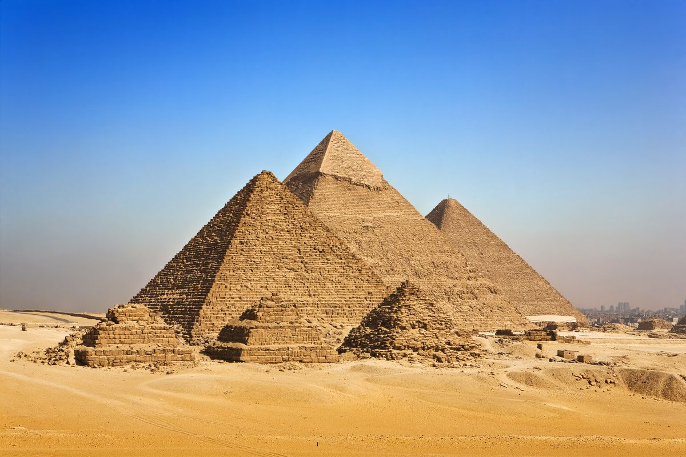
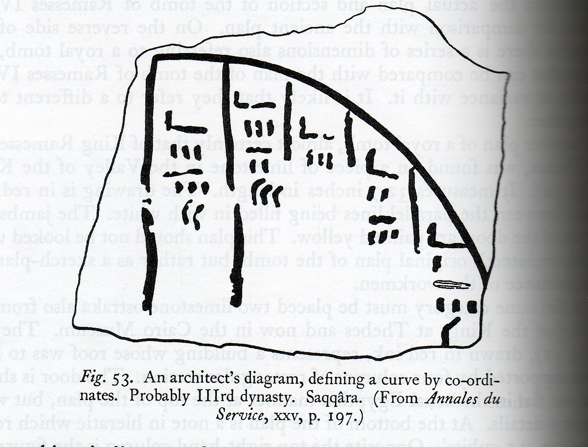
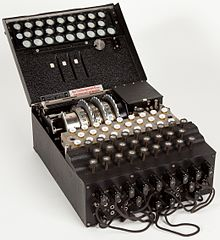
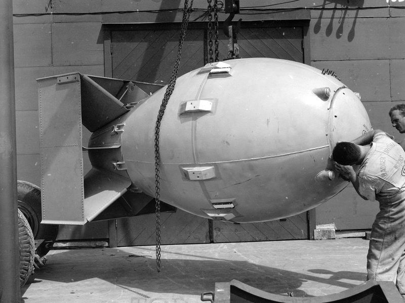
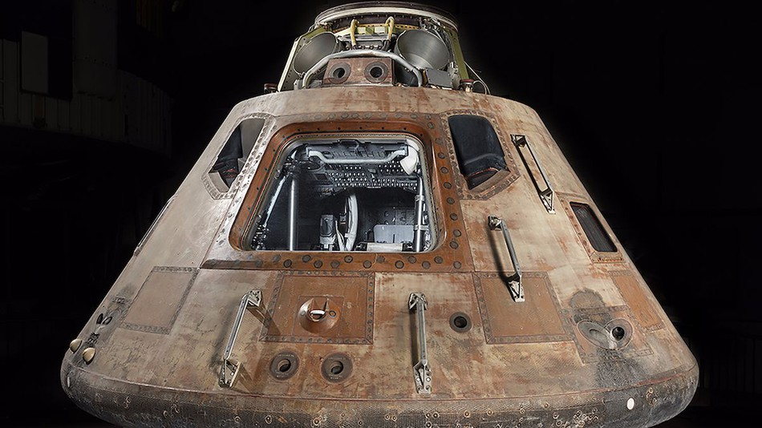

Great Pyramid of Giza
Primary Source:
The Great Pyramid of Giza was a large tomb that was a significant point in history were applied maths has been used. The Pyramid of Giza was used as tombs for the country's Pharaohs and their consorts, the pyramid protected their bodies. It stopped tomb robbers from digging up the pharaohs luxury items. The Egyptian engineering of the pyramid has changed the future mathematical building, allowing us to create more sophisticated structures and buildings.
2630 BCEnigma Machine
Primary Source:

The creation of Enigma from the German in ww2 made a significant advancement to applied mathematics. Enigma used mathematics to encrypt german messages, as the machine had 158,962,555,217,826,360,000 different combinations to it, making it nearly impossible to crack. The motive of the creation of enigma stemmed from the need of having a safe reliable way of communication to their army, and co-ordinate attacks. Enigma uses a modern electric current to pass through different scrambling elements and then display the ciphered letter of the lamp board. Enigma revolutionalized codes, as it allowed for many future ways of sending encrypted messages to others, the British even created a better enigma Typex, which was basically the same as the enigma but without the fatal flaws.
1924 ADBombe Machine
Primary Source:

The Bombe machine is an electro-mechanical device used to decipher the German Enigma machine encrypted messages during ww2. The Bombe machine was one of the first computers and used electrons to pass through the circuit to help decipher the enigma codes. The Bombe machine motivation was to help win the war and crack enigma. The Bombe machine has changed maths as it introduced computers to the world, and has added another level to decipher secret encrypted messages.
1939 ADAtomic Bomb
Primary Source:

The creation of the atomic bomb by the USA in ww2 to help defeat the Japanese was a horrific and devastating use of mathematics. Formulas such as Einstein's e = mc^2 were also used in the creation as they can create a lot of energy from the mass times the speed of light squared. The introduction to atomic bomb has changed the use of applied mathematics, as now it is being used to devastate cities and kill innocents.
1945 ADMoon Landing
Primary Source:
https://github.com/chrislgarry/Apollo-11 / Apollo-11's code that was released.

Apollo-11 was a major breakthrough in applied maths. Apollo used digital computers such as the Apollo guidance computer which has control of the spacecraft as could also communicate. Apollo-11 motivations were to get to the moon before the Russians did. The use of applied mathematics in the modern era has been used for further development of computing in Apollo-11, and also the astrophysicist that was required to actually launch. Apollo-11 has changed mathematics, as it has allowed future exploration and research of our universe.
1969 AD